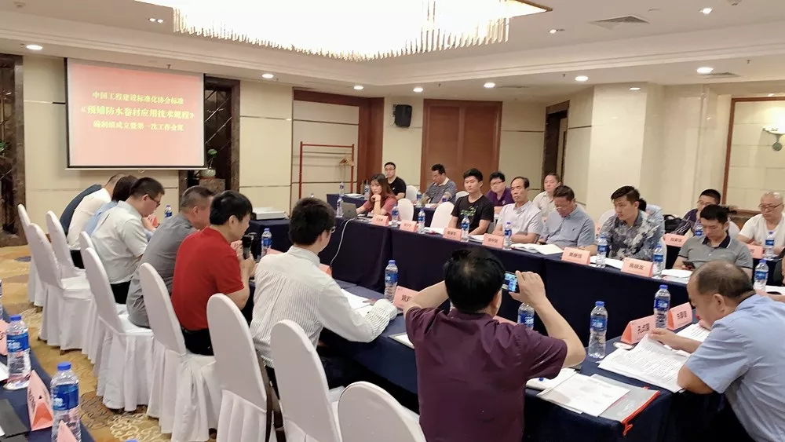
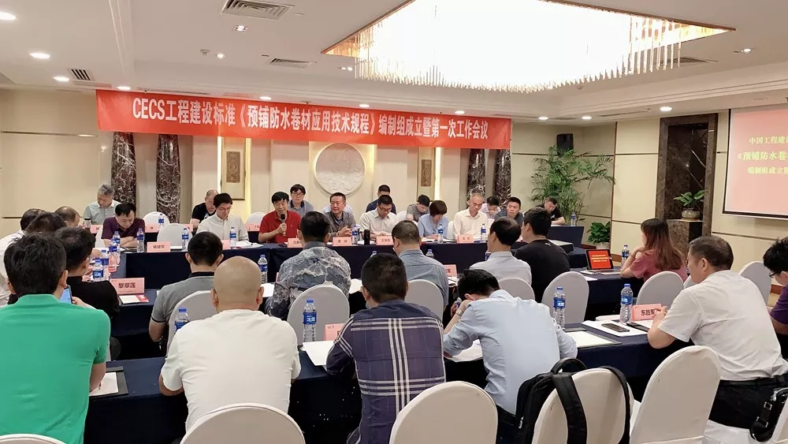

当前位置：
当前位置：
6月1日上午，中国工程建设标准化协会标准《预铺防水卷材应用技术规程》编制组成立暨第一次工作会议在苏州召开。
去年11月16日，中国工程建设标准化协会发布【关于印发《2018年第二批协会标准制定、修订计划》的通知】（建标协字[2018]030号），《预铺防水卷材应用技术规程》被列入制订计划，并明确由中国工程建设标准化协会防水防护与修复专业委员会归口管理，苏州非金属矿工业设计研究院有限公司和辽宁九鼎宏泰防水科技有限公司为主编单位。

中国工程建设标准化协会防水防护与修复专业委员会秘书长黄靖代表标准归口管理单位讲话，对标准编制提出要求，希望全体编制人员结合工程实际，集思广益、刻苦努力、不忘初心、牢记使命，从而使该标准具有先进性、实用性，具有广泛参考价值和指导意义。随后，黄靖秘书长宣读了编制组成员名单，并宣布编制组正式成立。
苏州非金属矿工业设计研究院防水材料设计研究所所长沈春林教授作为编制组负责人作了讲话。他表示，近年来，预铺防水卷材在实际工程中得到广泛应用，且应用比例逐年上升。因此，编制《预铺防水卷材应用技术规程》不仅非常必要，而且紧迫。编制组全体成员一定将结合实际，充分讨论，广泛征求各方意见，编制出好标准、金标准，从而助力防水工程质量提升。
随后，与会人员就《预铺防水卷材应用技术规程》标准编制工作进度安排、编制组成员工作分工、编制大纲、编制方案等进行了充分讨论，并形成共识。

中国工程建设标准化协会防水防护与修复专业委员会副秘书长王海龙主持了会议。
苏州非金属矿工业设计研究院、辽宁九鼎宏泰、中国建筑标准设计院、中国建研建材、南通睿睿、安徽东方佳信、潍坊鑫宝、福建中意铁科、江苏凯伦、浙江春明、山东汇源、北京金盾、阿尔法、远大洪雨、泰州奥佳、山东宏源、山东鑫达鲁鑫、哈尔滨福特、黑龙江吉德、深圳卓宝、上海台安、上海豫宏、福建铜浪、苏州姑苏、建研院、江苏嘉好、信阳东俊、广东能辉、盘锦禹王、福建新华美、东方雨虹、常熟三恒、苏州越球、安徽五星凯虹、北京建国伟业等企业参加了会议。
《预铺防水卷材应用技术规程》标准编制组人员名单：沈春林、王玉峰、高岩、郭景、姚双华、王海龙、王继飞、张金根、宫安、陈保军、陈晓龙、褚建军、康杰分、丁培祥、程文涛、季静静、邵增峰、卫向阳、蒋继恒、李文芳、陈晓龙等。